1Primeros pasos
1.1Iniciar sesión
Abre el sistema desde el navegador de la computadora de la sucursal. Se muestra la pantalla Acceso al sistema.
| Campo | Qué capturar |
|---|---|
| Usuario | Tu usuario (no distingue mayúsculas de minúsculas). |
| Contraseña | Tu contraseña personal. |
| Rol | El sistema inicia automáticamente con el perfil asignado a tu usuario. |
Pulsa Entrar.
- Si tu usuario tiene más de un rol asignado, pide al administrador que corrija la asignación.
- Si tu usuario está asignado a más de una sucursal, el sistema te pide elegir la sucursal; después te pide la caja. Si solo tienes una sucursal y una caja, entras directo.
- Solo puedes entrar a sucursales y cajas que el administrador te haya asignado. Si ves «La sucursal o caja no está asignada al usuario», pídele que revise tu asignación.
- Seguridad: después de 8 intentos fallidos en 15 minutos el acceso se bloquea temporalmente («Demasiados intentos fallidos. Espera unos minutos…»). Espera y vuelve a intentar.
- Las contraseñas se guardan cifradas. Nunca compartas la tuya: el sistema registra con tu usuario cada venta, cobro y gasto.
1.2La barra de contexto
Arriba de cada pantalla verás cuatro datos que indican con qué contexto estás trabajando:
| Dato | Significado |
|---|---|
| Sucursal | La sucursal activa. Todo lo que registres pertenece a ella. |
| Caja | La caja activa. De ella salen los folios y los cortes. |
| Usuario | Tu nombre. |
| Rol | Tu perfil. |
El botón ➜ Salir cierra tu sesión. Úsalo siempre al terminar tu turno o al dejar la computadora.
1.3Reglas generales de uso
- Los campos marcados con * (rojo) son obligatorios.
- Las acciones irreversibles (cerrar corte, cancelar venta, eliminar) piden confirmación.
- Las fechas se capturan como dd/mm/aaaa.
- Todos los importes están en pesos mexicanos.
- Si algo falla, el sistema muestra un mensaje; lee el mensaje antes de reintentar (casi siempre indica qué falta).
2Menú de cada perfil
El menú está en la parte izquierda y se organiza en secciones que se abren y cierran al pulsarlas. La sección de la pantalla en la que estás se mantiene abierta.
2.1Cajero
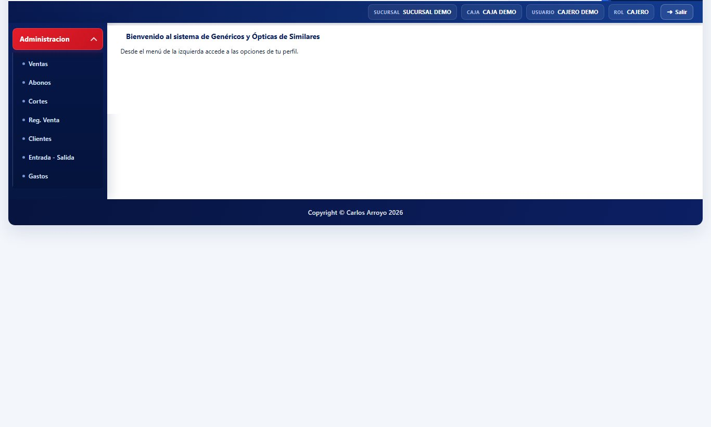
| Sección | Opciones |
|---|---|
| Ventas | Nueva venta · Abonos · Clientes · Registro de ventas · Venta de emergencia (celular) |
| Caja | Cortes de caja · Gastos |
Qué ve el cajero. Solo sus propias ventas: en Registro de ventas, en el Reporte de ventas, en Órdenes y en la ficha de cada cliente (historial de ventas y RX). Puede abonar a la nota de otro vendedor de su sucursal buscándola por folio en Abonos e imprimir el recibo del pago, pero no ve el detalle de esa venta ni nada de comisiones; la comisión sigue siendo del vendedor original.
2.2Gerente
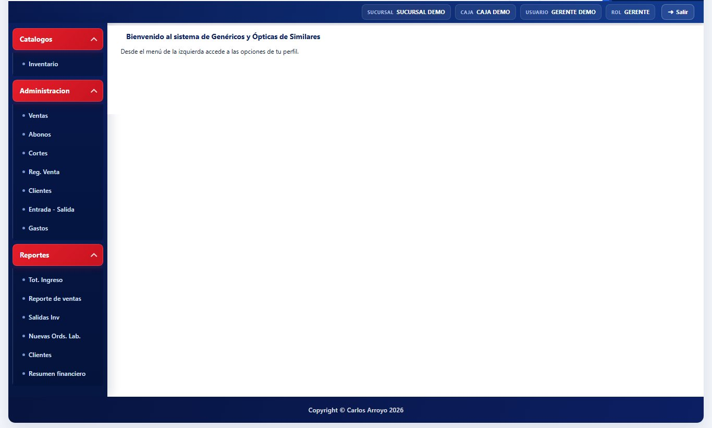
| Sección | Opciones |
|---|---|
| Ventas | Nueva venta · Abonos · Clientes · Registro de ventas · Venta de emergencia (celular) · Ventas de emergencia por completar |
| Caja | Cortes de caja · Gastos |
| Inventario | Inventario general · Categorías · Revisión de micas |
| Reportes | Ingresos · Ventas · Horas extra (administrador) · Salidas de inventario · Órdenes de laboratorio · Clientes · Notas anteriores · Resumen financiero |
2.3Servicios y documentos de sucursales
En Configuración → Sucursales, el cajero y el gerente solo consultan y copian las referencias de pago de luz, internet y agua de su sucursal. Los originales, la renta y los vencimientos son exclusivos de administración.
Administración abre Nueva sucursal o Editar y captura todo en la misma ficha: Datos generales, Servicios y documentos y Personal. Un solo botón Guardar sucursal guarda las pestañas juntas, incluidas referencias, fotos/PDF privados y próximas fechas de pago o renovación. La pantalla muestra los vencidos y próximos según la BD. Los avisos externos se envían desde una tarea diaria del servidor a los destinos de administración configurados en Telegram/Correos de avisos; no dependen de abrir el navegador. Ver Servicios de sucursales.
Portada de empleados
Cajeros y gerentes ven tres tarjetas de su sucursal actual: Listos por entregar, En laboratorio (incluye pedidos de entrega futura) y Para alcanzar la meta mensual. Los pedidos ya resueltos salen de los conteos y los cancelados no cuentan. La meta usa las ventas del mes de toda la sucursal, sin cancelaciones ni notas importadas, y hereda la última meta configurada si el mes no tiene una propia. Si falta configurar la meta, muestra Sin meta. Los datos se consultan en BD al cargar la pantalla.
Administración conserva su portada de Rentabilidad. El bloque de cuentas para depósito y su editor se retiraron de la portada para todos los perfiles.
3Flujo de trabajo del día
Este es el orden recomendado para una jornada normal en mostrador:
- Inicia sesión (sección 1).
- Abre el corte de caja con el fondo inicial (sección 4). Sin corte abierto no se puede vender.
- Atiende clientes: busca o registra al cliente (sección 8) y levanta la venta (sección 5). Entrega el ticket y, si hay lentes graduados, la orden de laboratorio.
- Cobra saldos cuando el cliente regrese: Abonos (sección 6) o Registro de ventas (sección 7).
- Registra los gastos del día pagados de la caja (sección 9).
- Al terminar: cuenta el efectivo, cierra el corte capturando lo contado (sección 4) e imprime el ticket del corte.
- Pulsa Salir.
4Cortes de caja
Menú: Caja → Cortes de caja · Perfiles: Cajero y Gerente
El corte es el periodo de trabajo de una caja: arranca con un fondo inicial y termina cuando se cuenta el efectivo. Todo lo que cobras, gastas o depositas queda registrado dentro del corte abierto.
4.1Si no hay corte abierto
Si entras a Ventas sin corte abierto, el sistema te manda a Cortes (no se puede vender sin corte).
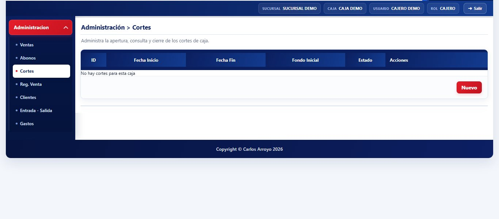
4.2Abrir un corte
- Pulsa Nuevo.
- El sistema propone abrir con el efectivo con el que cerró el corte anterior de esa caja. Pulsa Abrir corte con $… y listo, sin teclear nada.
- Si la caja abre con otra cantidad, pulsa Es otra cantidad, captura el Fondo en pesos enteros y pulsa Guardar (se avisa al administrador que el fondo no es el del cierre anterior).
- La primera vez que se usa una caja no hay cierre anterior, así que se captura el fondo.
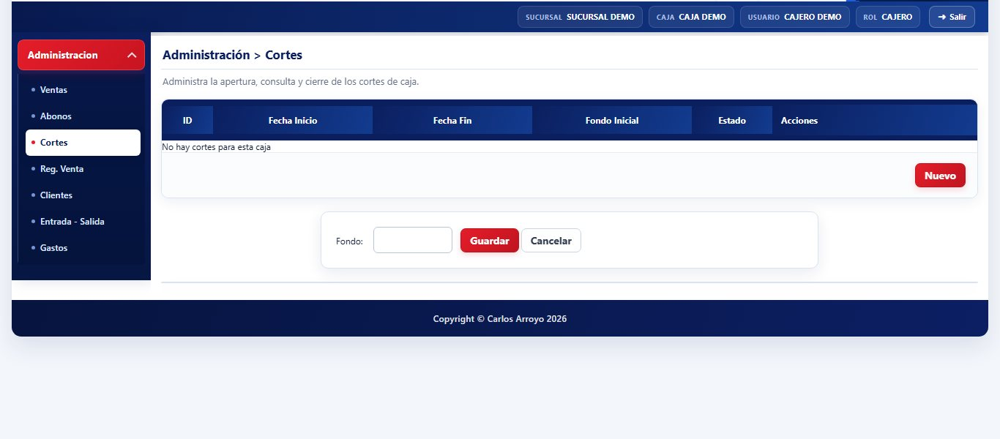
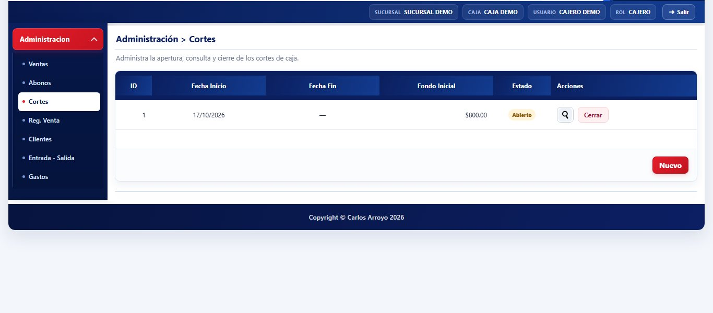
La lista muestra: ID, Fecha inicio, Fecha fin, Fondo inicial, Estado (Abierto / Cerrado) y las acciones:
| Acción | Para qué sirve |
|---|---|
| 🔍 (lupa) | Ver el resumen del corte. |
| Cerrar | Cierra el corte (solo si está abierto). |
4.3Resumen del corte
Al pulsar la lupa se muestra el detalle:
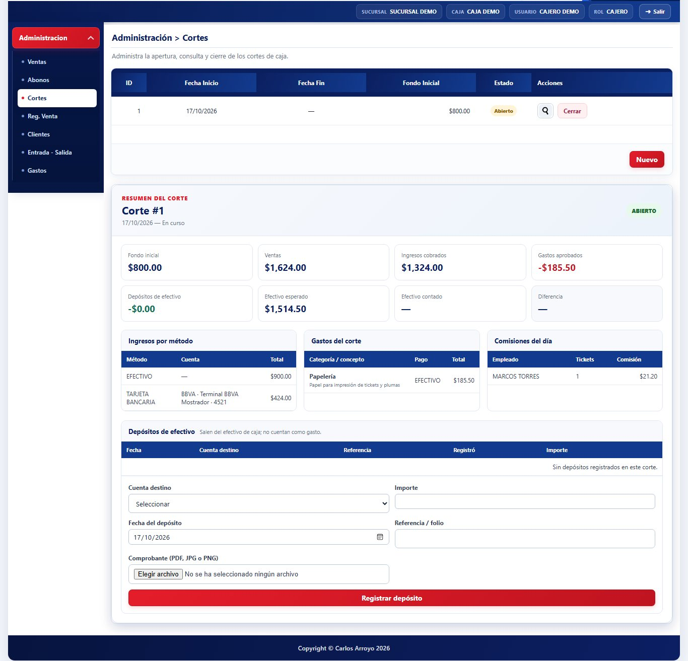
| Tarjeta / tabla | Qué muestra |
|---|---|
| Fondo inicial | Efectivo con el que abriste. |
| Ventas | Total de las ventas registradas en el corte (aunque tengan saldo). |
| Ingresos cobrados | Dinero realmente cobrado (anticipos, abonos y pagos de contado). |
| Gastos aprobados | Gastos del corte pagados de la caja. |
| Depósitos de efectivo | Efectivo que sacaste de la caja para depositarlo en el banco. |
| Efectivo esperado | Lo que debería haber físicamente: fondo + efectivo cobrado − gastos en efectivo − depósitos. |
| Efectivo contado y Diferencia | Se llenan al cerrar: lo que contaste y la diferencia contra lo esperado. |
| Ingresos por método | Cobros agrupados por método y cuenta (efectivo, tarjeta…). |
| Gastos del corte | Cada gasto con su categoría y concepto. |
| Comisiones del día | Comisión generada por empleado (por tickets liquidados). |
| Depósitos de efectivo | Lista de depósitos y formulario para registrar uno nuevo. |
Ejemplo con los datos de la captura: fondo $800.00 + efectivo cobrado $900.00 − gasto $185.50 = $1,514.50 de efectivo esperado.
4.4Registrar un depósito de efectivo
En el recuadro Depósitos de efectivo del corte:
- Elige la Cuenta destino (las configura el administrador).
- Captura el Importe (mayor a cero), la Fecha del depósito y la Referencia / folio.
- Adjunta el comprobante (PDF, JPG o PNG) si lo tienes.
- Pulsa Registrar depósito.
Reglas: los depósitos salen del efectivo de caja y no cuentan como gasto. Si el corte ya está cerrado, solo un gerente o el administrador puede registrar o cancelar depósitos en él.
4.5Cerrar el corte
- En la lista, pulsa Cerrar en el corte abierto.
- El sistema muestra el efectivo que calcula que hay en caja (fondo + efectivo cobrado − gastos − depósitos).
- Si es lo que tienes, pulsa Sí, coincide: cerrar corte y confirma el aviso «Va a cerrar el corte…, esta opción es irreversible». Se cierra con esa cifra.
- Si no coincide, pulsa No coincide, voy a contar, captura el efectivo contado en pesos enteros y pulsa Cerrar Corte. La diferencia queda registrada.
- Si mientras tanto se vendió o se gastó y la cifra cambió, el sistema no cierra y pide abrir el cierre otra vez.
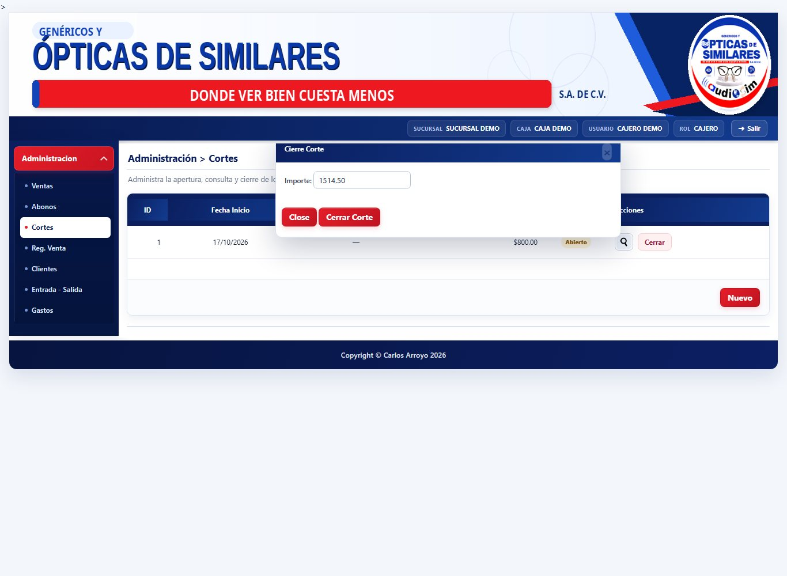
El sistema calcula la diferencia entre lo contado y lo esperado. Si cuadra, la diferencia es $0.00.
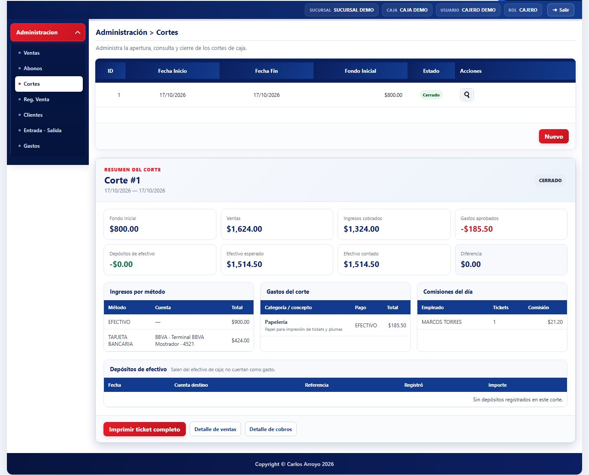
En un corte cerrado aparecen tres enlaces al pie:
| Enlace | Documento |
|---|---|
| Imprimir ticket completo | Ticket del corte con resumen, ingresos, gastos, depósitos, comisiones y conciliación de efectivo. |
| Detalle de ventas | Listado de las ventas del corte. |
| Detalle de cobros | Listado de los cobros del corte. |
4.6Horas extra
En la misma pantalla de Cortes de caja hay una pestaña Horas extra. Cada empleado (cajero, gerente o administrador) registra solo las suyas y solo las de hoy: no se capturan días anteriores ni futuros, y la pantalla ni siquiera pide la fecha.
- Entra a Caja → Cortes de caja y pulsa la pestaña Horas extra.
- Elige las horas (de media en media hora, de 0.5 a 6) y escribe en qué trabajaste.
- Pulsa Registrar horas extra de hoy. Queda Pendiente de aprobación; solo se puede registrar una vez al día.
- Si te equivocaste, mientras siga pendiente puedes Borrar y volver a capturar (solo la de hoy).
Un administrador las aprueba o las rechaza (desde Telegram o desde Reportes → Horas extra). En tu historial verás:
| Estado | Qué ves |
|---|---|
| Pendiente | Pendiente de aprobación |
| Aprobada | Aprobada: X h, o Aprobada con ajuste: X h (capturaste Y h) si el administrador aprobó menos horas |
| Rechazada | Rechazada. Comunícate con tu supervisor. (el motivo lo ve solo la administración) |
El sistema solo cuenta horas: no calcula pagos.
5Ventas
Menú: Ventas → Nueva venta · Perfiles: Cajero y Gerente
Pantalla principal de mostrador. Aquí se levanta una nota de venta con sus artículos, la graduación de los lentes y los pagos. Requiere un corte abierto.
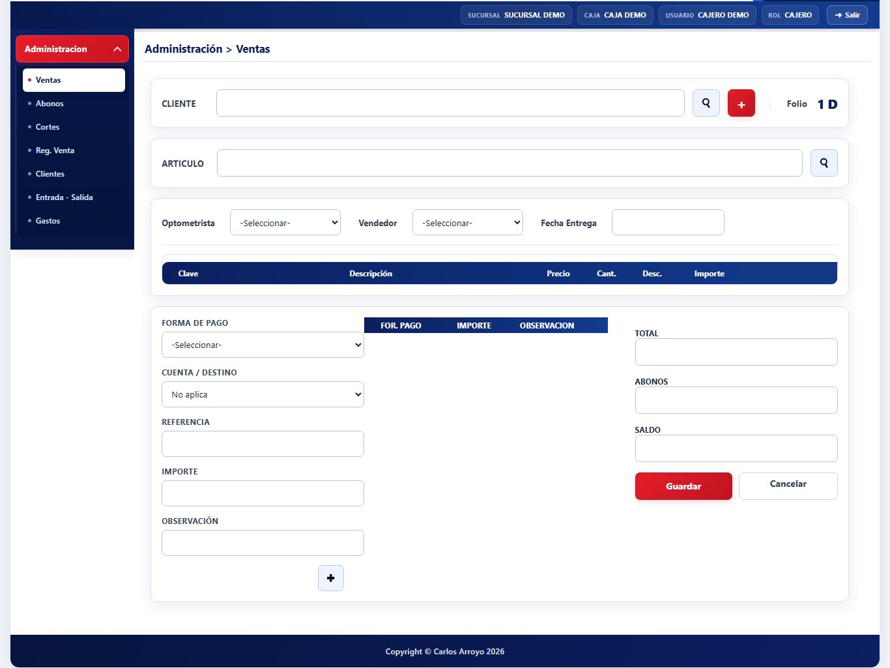
5.1Partes de la pantalla
| Zona | Función |
|---|---|
| CLIENTE | Elegir o registrar al cliente. Muestra además el Folio de la nota (número consecutivo y serie de la caja). |
| ARTICULO | Buscar y agregar artículos. |
| Optometrista / Vendedor / Fecha Entrega | Datos de la nota. |
| Tabla de artículos | Clave, Descripción, Precio, Cant., Desc. e Importe de cada partida. |
| FORMA DE PAGO | Captura de los pagos (anticipos o liquidación). |
| TOTAL / ABONOS / SALDO | Totales de la nota. |
| Guardar / Cancelar | Registrar la venta o limpiar la pantalla. |
5.2Paso 1 — Elegir el cliente
Pulsa la lupa junto a CLIENTE. Se abre la lista de clientes de tu sucursal; puedes filtrar por nombre o navegar por páginas. Haz clic en el cliente para seleccionarlo. Cada sucursal ve y vende solo a los clientes que se registraron en ella (el sistema rechaza la venta si se manda un cliente de otra sucursal).
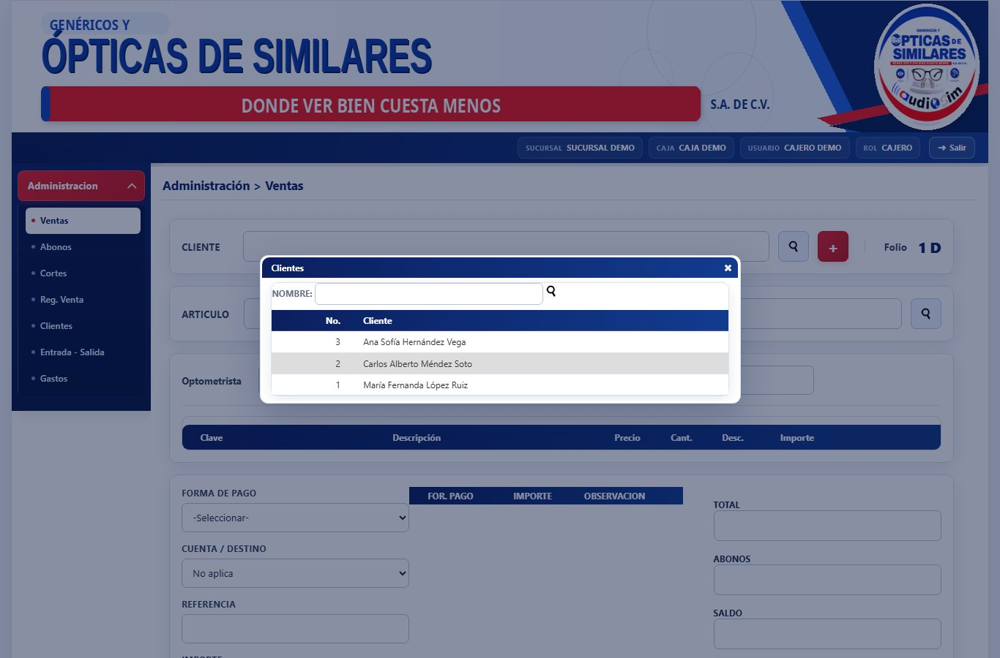
¿El cliente no existe? Pulsa el botón rojo + (Registrar cliente nuevo). Se abre un formulario rápido con: Nombre completo*, Estado*, Ciudad, Colonia*, Dirección, Teléfono, Celular y Correo. Al pulsar Guardar y seleccionar el cliente queda registrado y seleccionado en la venta.
5.3Paso 2 — Agregar artículos
Pulsa la lupa junto a ARTICULO. En el cuadro puedes buscar por Descripción o filtrar por Línea (categoría: Accesorios, Micas, Armazones, Lentes de contacto, Servicios…). Haz clic en el artículo para agregarlo.
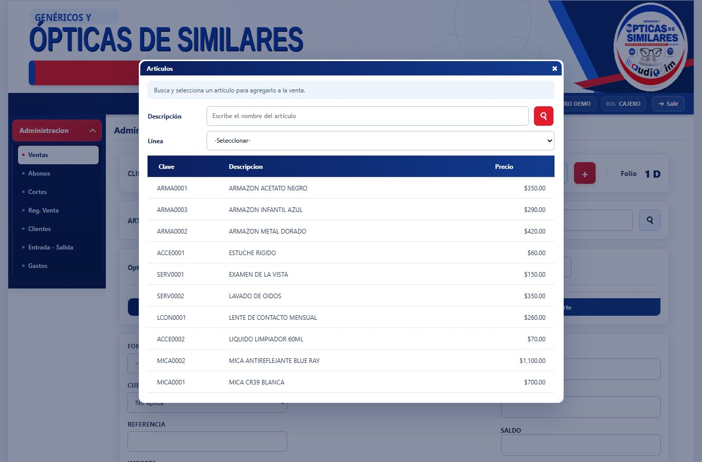
Cada artículo agregado aparece como una fila. Puedes:
- Cambiar la Cantidad (se recalcula el importe al salir del campo o pulsar Enter).
- Capturar un descuento (%) de 0 a 100. Fuera de ese rango el sistema no deja guardar.
- Quitar la fila con el icono de bote de basura (pide confirmación).
5.4Paso 3 — Graduación (lentes y micas)
Las micas y los lentes de contacto muestran el botón ✚ Graduación. Al pulsarlo se despliega el panel de graduación de esa pieza.
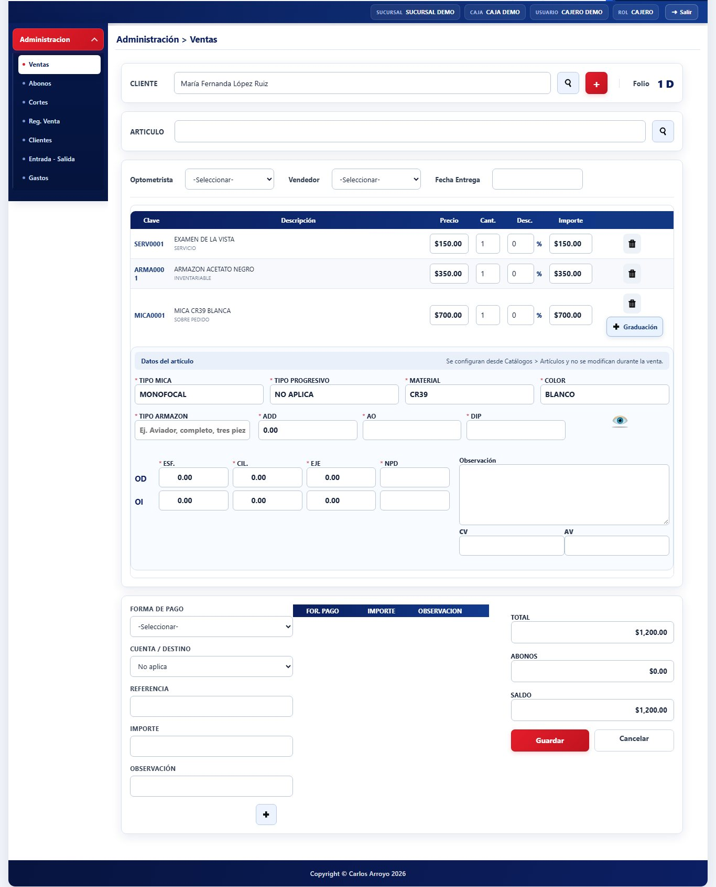
| Zona | Qué capturar |
|---|---|
| Datos del artículo (Tipo mica, Tipo progresivo, Material, Color) | Solo lectura: vienen del catálogo y no se modifican durante la venta. |
| Tipo armazón | Texto libre (ej. aviador, completo, tres piezas). |
| ADD | Adición (lentes progresivos / bifocales). |
| AO | Altura óptica. |
| DIP | Distancia interpupilar. |
| OD (ojo derecho) / OI (ojo izquierdo) | Esf. (esfera), Cil. (cilindro), Eje y NPD (distancia naso‑pupilar). |
| Observación | Notas para el laboratorio (por ejemplo, tratamiento antirreflejante). |
| CV / AV | Campo visual y agudeza visual (opcionales). |
| Icono del ojo 👁 | Importar la última RX registrada del cliente para no capturarla de nuevo. |
Reglas de las micas. La DIP es el único dato obligatorio (dos números separados por una diagonal, por ejemplo 65.3/98.1; cada uno entre 20 y 99.9 mm, con un decimal como máximo). Esfera, cilindro y ADD son opcionales, pero si se capturan deben ir en pasos de 0.25 y dentro del rango que el catálogo define para esa mica (Esfera mínima/máxima, Cilindro mínimo/máximo y Adición mínima/máxima en el artículo); si se salen del rango el sistema no deja vender. Una mica sin rango de adición, o con 0 y 0, no puede llevar adición (el campo ADD queda en 0 y bloqueado).
Reglas de los lentes de contacto. Todos los artículos de la categoría Lentes de contacto (también sus variantes, por ejemplo Lente de contacto tórico) llevan el panel de graduación, pero ningún dato es obligatorio, no tienen rangos y no piden DIP. Si el vendedor no captura nada, la venta se guarda sin graduación (y no cambia la última RX del cliente). Si captura algo, se guarda tal cual y sale en la orden de laboratorio (Ord. Lab), con el título Graduación - Lentes de contacto y sin DIP ni medidas de montaje.
Esfera, cilindro y adición del catálogo. En Catálogos › Artículos, cada lente de contacto tiene los campos Esfera, Cilindro y Adición (opcionales; se pueden dejar en 0). Al venderlo, el panel de graduación ya trae esos valores en ambos ojos y en ADD, y el vendedor los puede cambiar aunque estén en cero; se guardan los que queden al guardar la venta. Si una categoría con otro nombre debe llevar graduación de lente de contacto, asígnale el atributo ESFERA (y, si quieres, CILINDRO y ADICIÓN) en Catálogos › Categorías.
5.5Paso 4 — Optometrista, vendedor y fecha de entrega
- Optometrista: quien realizó el examen.
- Vendedor: quien atendió la venta (a él se le atribuyen la venta y su comisión).
- Fecha Entrega: cuándo se prometió al cliente.
Las listas muestran a los cajeros y gerentes asignados a tu sucursal. Los tres campos son obligatorios.
5.6Paso 5 — Cobro
- Elige la Forma de pago: EFECTIVO, CHEQUE, DEPOSITO, TARJETA BANCARIA, TARJETA CREDITO, TARJETA DEBITO o TRANSFERENCIA (según lo configurado).
- Si es transferencia, depósito o tarjeta, selecciona la Cuenta / destino (terminal o cuenta que recibe el dinero). Es obligatoria en esos métodos; si no aparece ninguna, avisa al administrador para que la dé de alta.
- Captura la Referencia (por ejemplo, la autorización de la terminal), el Importe y, opcionalmente, una Observación (por ejemplo, Anticipo).
- Pulsa el botón ✚ (o Enter) para agregar el pago. Puedes agregar varios pagos (por ejemplo, parte en efectivo y parte con tarjeta). El icono de bote de basura quita un pago.
Reglas:
- La suma de pagos no puede superar el total («No se puede abonar más del total»).
- No es necesario pagar el total: lo que falte queda como SALDO y se cobra después en Abonos.
Pago con tarjeta (ejemplo):
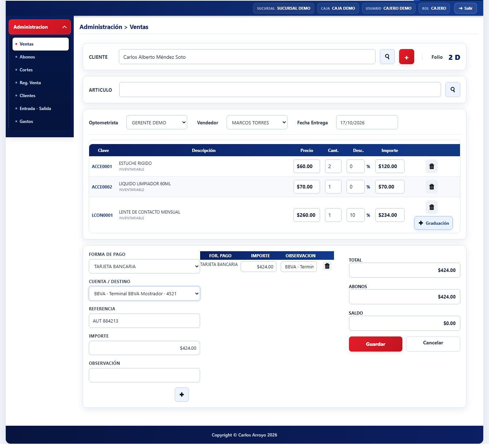
5.7Paso 6 — Guardar
Pulsa Guardar y confirma «Está a punto de crear una nueva NOTA, ¿desea continuar?». El sistema valida que haya cliente, optometrista, vendedor, fecha de entrega y al menos un artículo.
Al guardar:
- Se asigna el folio (y se actualiza el consecutivo de la caja).
- Se descuenta el inventario de los artículos inventariables.
- Se registran los cobros; si la nota queda totalmente liquidada se genera la comisión del vendedor.
- Si hubo graduación, se actualiza la fecha de última RX del cliente.
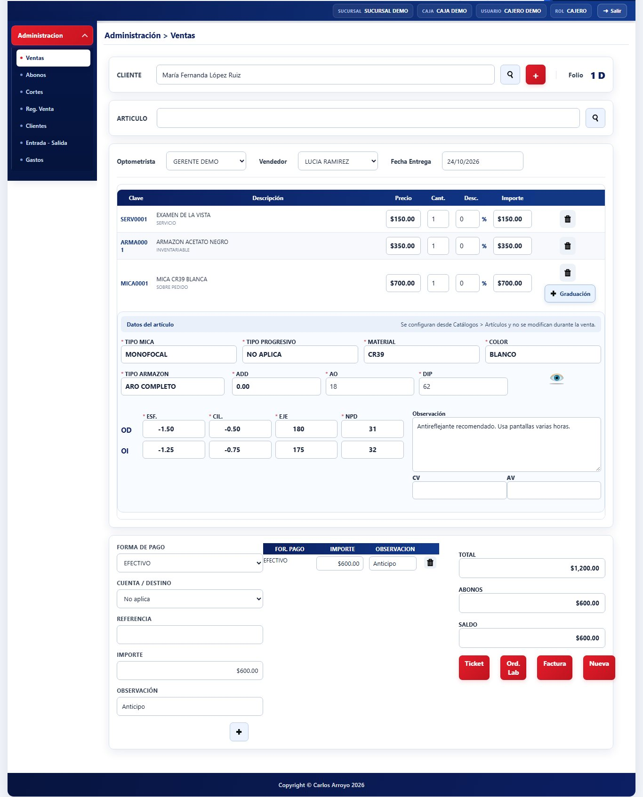
Aparecen cuatro botones:
| Botón | Qué hace |
|---|---|
| Ticket | Abre el ticket (nota de venta) en PDF para imprimir. |
| Ord. Lab | Abre la orden de laboratorio con la graduación y las medidas. |
| Factura | Abre la pantalla Solicitar factura (sección 12.3). |
| Nueva | Limpia la pantalla para una nueva venta. |
5.8Nota o factura
Por omisión la venta se registra como NOTA (remisión). Si pulsas sobre la etiqueta del Folio aparecen las opciones NOTA / FACTURA para elegir el tipo de documento; cada tipo usa su propia serie y consecutivo de la caja.
6Abonos
Menú: Ventas → Abonos · Perfiles: Cajero y Gerente
Sirve para cobrar el saldo pendiente de notas ya registradas.
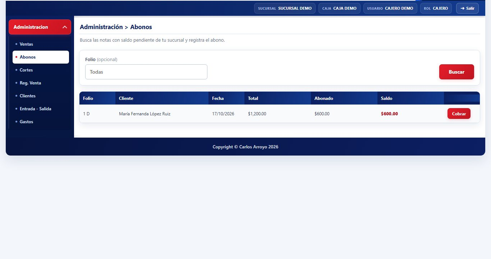
6.1Buscar notas con saldo
La pantalla lista las notas con saldo pendiente de la sucursal: Folio, Cliente, Fecha, Total, Abonado y Saldo.
- Para localizar una nota, escribe su Folio (opcional) y pulsa Buscar. El campo acepta también el número del ticket del sistema anterior, con o sin serie:
7614,F-7614oF7614. - El Gerente ve todas las notas de la sucursal; el Cajero ve en la lista únicamente las notas en las que él es el vendedor.
- Si llega el cliente de otro vendedor de la misma sucursal, el cajero escribe el folio o el ticket anterior de esa nota y pulsa Buscar: aparece con la leyenda Vendió … y solo puede cobrar el abono e imprimir el recibo; no ve nada de comisiones. La comisión sigue siendo del vendedor original, aunque el abono que la liquide lo cobre otra persona. Las notas anteriores siguen la misma regla: en la lista cada quien ve las suyas y las de otros solo buscándolas. Fuera de Abonos (registro de ventas, reimprimir la nota, cancelar, reporte de Notas anteriores) el cajero sigue viendo solo lo suyo.
6.2Registrar un abono
- En la nota deseada pulsa Cobrar.
- Revisa las tarjetas Total, Abonado y Saldo pendiente.
- Elige la Forma de pago, la Cuenta / destino (si el método lo requiere), la Referencia, el Importe y una Observación.
- Pulsa Registrar abono.
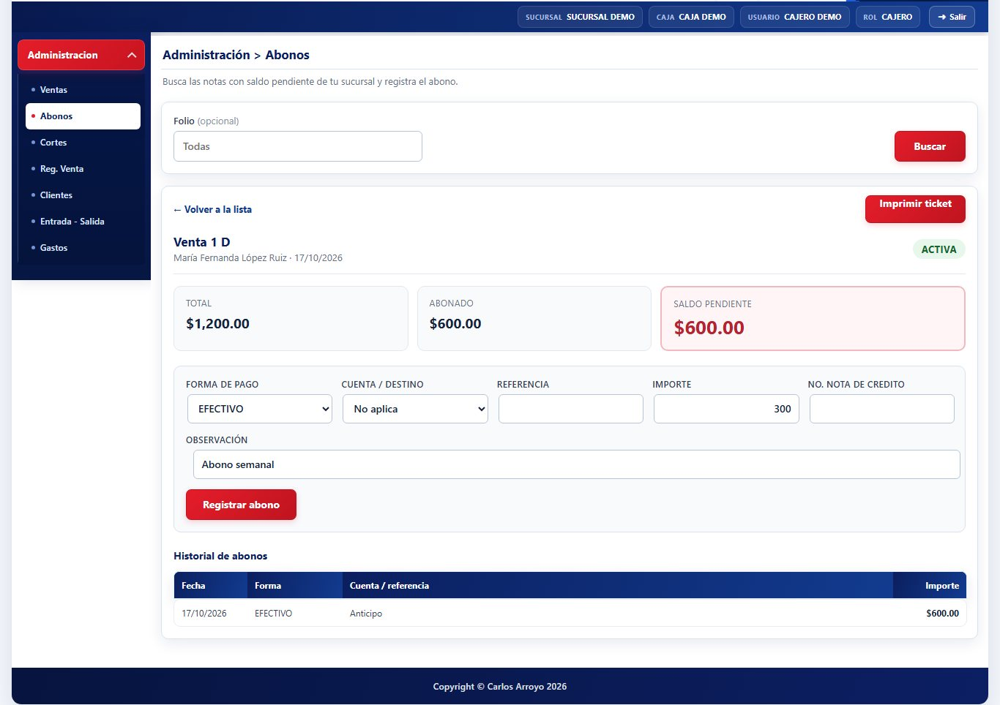
Después del abono el saldo se actualiza y el historial de abonos muestra el movimiento. Con Imprimir ticket obtienes el ticket actualizado.
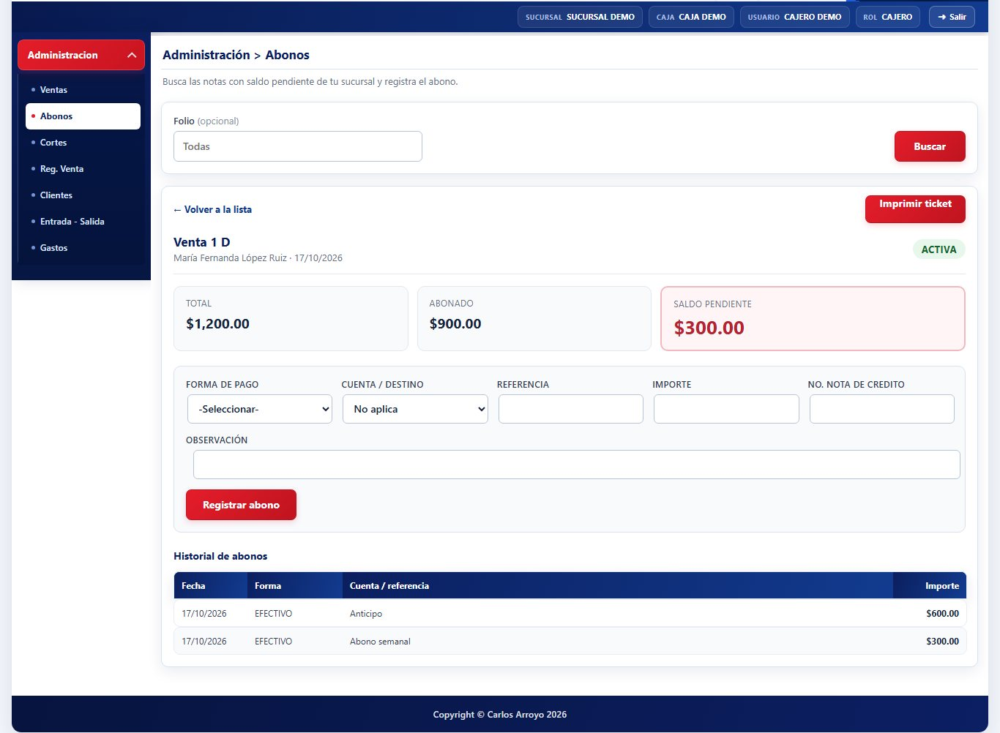
Reglas del sistema:
- El abono no puede ser mayor al saldo actual.
- Debes tener un corte abierto («Debes tener un corte abierto para registrar el abono»).
- Los métodos con cuenta (tarjeta, transferencia, depósito) exigen elegir la cuenta/destino, y la cuenta debe pertenecer a tu sucursal.
- Cuando el abono liquida la nota (saldo en cero) se genera la comisión del vendedor. El bono diario se calcula por separado: por cada $2,500 cobrados en el día para el vendedor original, incluidos anticipos y abonos de uno o varios tickets aunque tengan saldo, se generan $100. Se excluyen accesorios; los tickets mixtos se prorratean. El sobrante no pasa a otro día. Los bonos tienen su propio estado de pago en Personal → Comisiones. También se reconstruyen los días anteriores con esta regla; consulta Bonos por cobros.
6.3Notas anteriores (tickets del sistema anterior)
Son tickets vendidos en el sistema anterior que todavía tienen saldo. Se cobran en Abonos con las mismas reglas que cualquier nota (el cajero ve las suyas y cobra las de otros buscándolas por folio o ticket anterior); importarlas, capturarlas a mano y el reporte son de administradores y gerentes. Aparecen en la lista de Abonos con la leyenda Nota anterior · ticket F-7614, llevan su propia serie (NA + sucursal) y no cuentan como venta nueva (ni en el corte, ni en metas, ni en rentabilidad; los cobros recibidos aquí sí pueden generar bono diario).
- Importarlas (Administrador): en Reportes → Notas anteriores pulsa Importar del sistema anterior (PDF) y sube el reporte de saldos por vendedor de cada sucursal (se pueden subir varios a la vez). En la vista previa revisa la sucursal de cada archivo y pulsa Importar. Cada ticket queda a nombre de la persona que dice el reporte, buscada por su nombre completo (no por su usuario; sin importar mayúsculas, acentos ni el orden de nombre y apellidos). Si esa persona aún no está registrada, sus tickets quedan pendientes de registrar y, en cuanto la des de alta en Usuarios con ese nombre, sus notas y comisiones se le asignan solas. Solo entran los tickets con saldo pendiente; los que ya estaban registrados no se tocan, así que importar dos veces el mismo PDF no duplica nada. El sistema comprueba que cada vendedor sume su TOTAL VENDEDOR; si el PDF no cuadra, no importa ese archivo.
- Cliente: el reporte no trae al paciente, así que la nota importada queda a nombre de POR ASIGNAR (NOTA ANTERIOR). En su primer abono el sistema pide buscar y elegir al paciente, y desde ahí la nota queda a su nombre.
- Capturar una a mano: en Abonos, Abono de nota anterior, con la serie y el folio del ticket viejo. La primera vez se captura la fecha de venta, el importe total del ticket, el saldo anterior, quién vendió y el cliente.
- Comisión: al liquidarse genera la comisión del vendedor original (el 5% del importe total del ticket, no solo del saldo cobrado aquí), por pagar en Comisiones como cualquier otra.
6.4Pedidos por entregar (Ventas → Pendientes)
La ubicación del pedido y el pago se controlan por separado. Liquidar no significa entregar. La pantalla tiene tres pestañas:
| Pestaña | Qué muestra | Botón principal |
|---|---|---|
| Por llegar del laboratorio | Pedidos en proceso, incluidos los de fecha futura, para hoy y atrasados. | Confirmar llegada a sucursal cuando estén físicamente ahí. |
| Pagados sin recoger | Llegada confirmada y saldo cero. | Entregar al cliente, con nombre de quien recoge y fecha real. |
| Con saldo sin recoger | Llegada confirmada y saldo pendiente. | Ir a Abonos para cobrar; la entrega se confirma por separado. |
- Cada pestaña tiene Exportar este informe a Excel, con todas las filas de esa vista y los mismos filtros de sucursal y búsqueda.
- Anotar seguimiento registra llamadas, notas o que el cliente no ha recogido; no elimina el pedido.
- Los cierres antiguos ambiguos y las entregas automáticas al cobrar aparecen en Por revisar. No se supone que fueron entregados por su antigüedad.
- Registrar salida sin entrega, para gerentes y administradores, exige motivo y destino físico; no cancela la venta ni devuelve dinero.
- Ver entregas y salidas abre el historial por separado. Un gerente puede corregir una entrega capturada por error, con motivo y auditoría.
- La garantía empieza al confirmar la entrega física. No se puede entregar con saldo pendiente: primero se liquida en Abonos (cobrar no entrega por sí solo).
- Toda la sucursal puede atender sus pedidos; el gerente ve sus sucursales y el administrador todas.
Consulta el flujo completo de pedidos y entregas, incluido cómo conciliar los registros anteriores.
7Registro de venta
Menú: Ventas → Registro de ventas · Perfiles: Cajero y Gerente
Es el historial de ventas: permite buscar cualquier nota, ver su detalle completo, abonar, reimprimir documentos y (solo gerente) cancelarla.
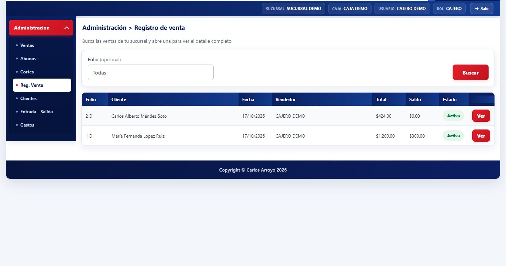
7.1Buscar una venta
Elige la sucursal, escribe el Folio si lo conoces (si lo dejas vacío muestra todas) y pulsa Buscar. En la lista pulsa Ver en la venta que necesites. El Cajero solo ve las ventas donde él fue el vendedor.
7.2Detalle de la venta
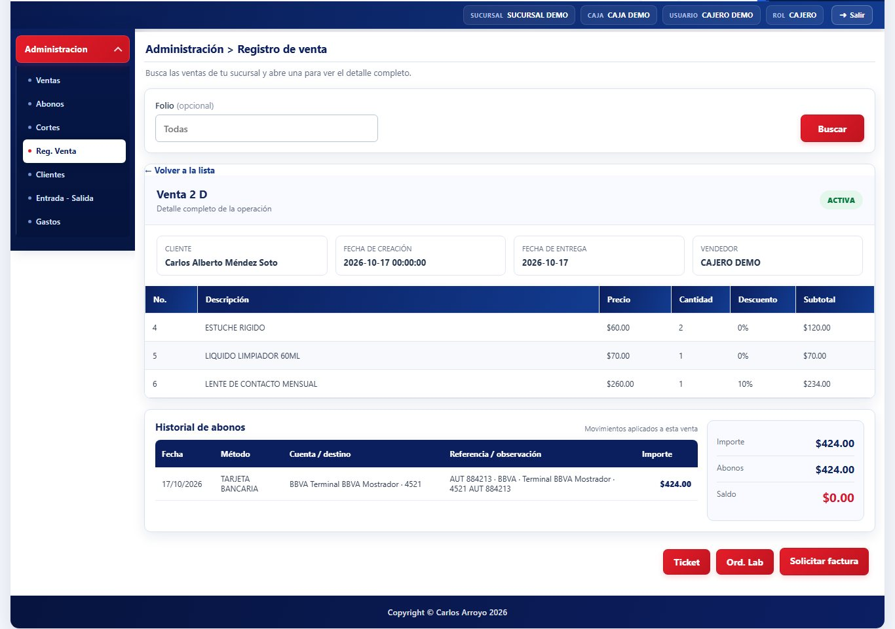
Muestra el estado (ACTIVA / CANCELADA), el cliente, las fechas de creación y entrega, el vendedor, las partidas (número, descripción, precio, cantidad, descuento y subtotal), el historial de abonos (fecha, método, cuenta/destino, referencia e importe) y el resumen Importe / Abonos / Saldo.
Con ← Volver a la lista regresas a los resultados.
7.3Agregar un abono desde aquí
En el recuadro Agregar abono elige la forma de pago, la cuenta (si aplica), la referencia, el importe y la observación; pulsa Guardar abono y confirma. El saldo y el ticket se actualizan al instante. Aplican las mismas reglas de la sección 6.2.
7.4Botones de la venta
| Botón | Quién | Qué hace |
|---|---|---|
| Ticket | Cajero y Gerente | Abre la nota en PDF. |
| Ord. Lab | Cajero y Gerente | Abre la orden de laboratorio. |
| Solicitar factura | Cajero y Gerente | Abre el formulario de factura (sección 12.3). |
| Cancelar Venta | Solo Gerente (y Administrador) | Cancela la venta. |
7.5Cancelar una venta (Gerente)
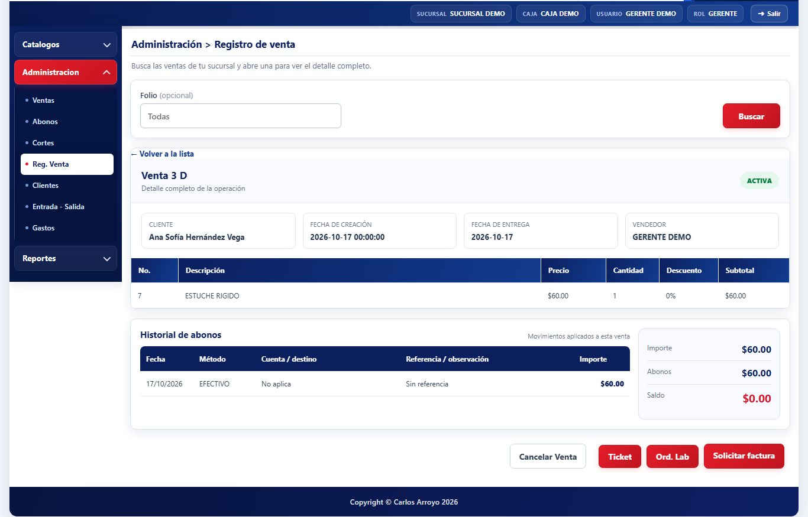
- Abre la venta y pulsa Cancelar Venta.
- Confirma el aviso «Está a punto de cancelar la venta, esta opción es irreversible».
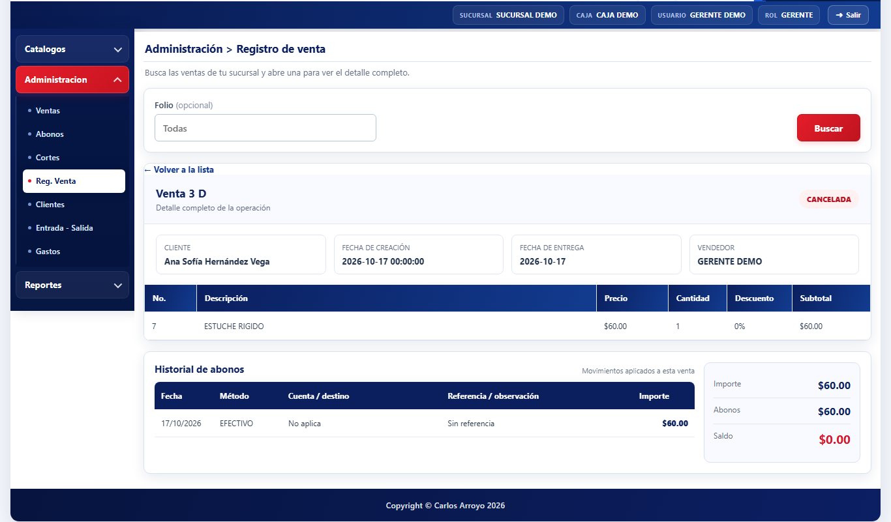
Efectos de la cancelación:
- La venta queda CANCELADA y deja de contar en los reportes de ventas.
- Se anula la comisión pendiente del vendedor.
- Si el corte de la venta o alguno de sus cobros está cerrado, debe reabrirse antes de cancelar.
- En las nuevas cancelaciones, los cobros recibidos permanecen en los ingresos de caja. Al devolver dinero al cliente, registra esa salida una sola vez como gasto, indicando el folio de la venta. Cancelar no devuelve dinero automáticamente. Las cancelaciones anteriores conservan su cálculo histórico.
- Una venta cancelada no se puede cancelar otra vez ni recibe más abonos.
- Es irreversible. Antes de cancelar confirma que es la venta correcta.
8Clientes y exámenes de la vista
Menú: Ventas → Clientes · Perfiles: Cajero y Gerente
Catálogo de clientes de la sucursal, con su historial clínico y sus exámenes de la vista.
8.1Buscar clientes
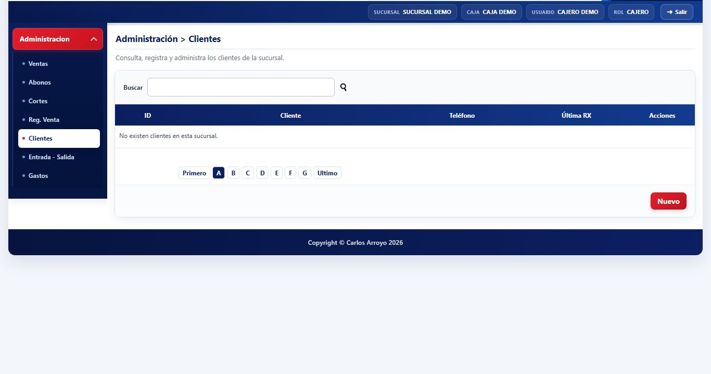
Hay dos formas de buscar:
- Por letra: usa el paginador A, B, C… para ver los clientes cuyo nombre empieza con esa letra.
- Por texto: escribe en Buscar y pulsa la lupa (o Enter).
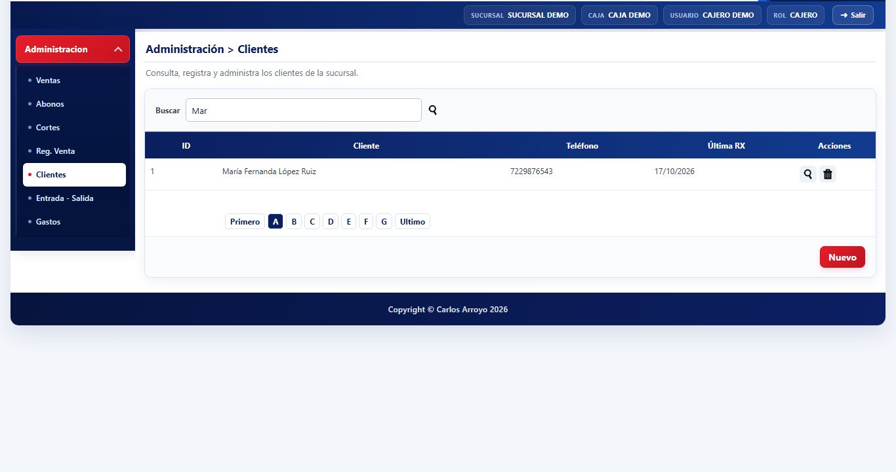
La tabla muestra ID, Cliente, Teléfono, Última RX y las acciones: 🔍 ver / editar y 🗑 eliminar (pide confirmación: «Está a punto de eliminar el cliente»).
8.2Registrar un cliente nuevo
Pulsa Nuevo. El formulario tiene tres bloques.
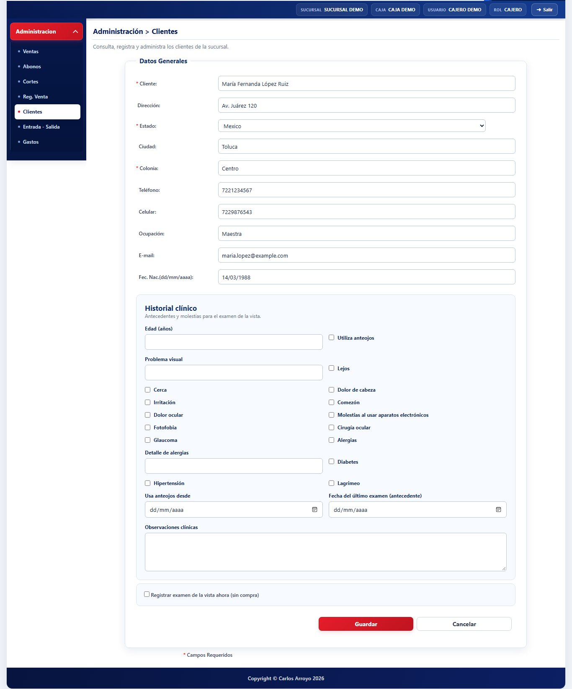
Datos generales
| Campo | Notas |
|---|---|
| Cliente* | Nombre completo. |
| Dirección | Calle y número. |
| Estado* | Se elige de una lista. |
| Ciudad | Texto libre. |
| Colonia* | Texto libre. |
| Teléfono / Celular | Úsalos para contactar al cliente (avisos y WhatsApp). |
| Ocupación | Opcional. |
| E‑mail | Se usa para enviar el reporte del examen. |
| Fec. Nac. (dd/mm/aaaa) | Fecha de nacimiento. |
Historial clínico (antecedentes y molestias): edad, si utiliza anteojos, problema visual, si ve mal de lejos o de cerca, dolor de cabeza, irritación, comezón, dolor ocular, molestias al usar aparatos electrónicos, fotofobia, cirugía ocular, glaucoma, alergias (con detalle), diabetes, hipertensión, lagrimeo, desde cuándo usa anteojos, fecha del último examen y observaciones clínicas.
Registrar examen de la vista ahora (sin compra). Si marcas esta casilla se despliegan los campos del examen: fecha, optometrista, OD/OI (esfera, cilindro, eje, NP), ADD, AO, DIP, CV, AV, tipo de armazón y observaciones. Sirve para guardar un examen aunque el cliente todavía no compre.
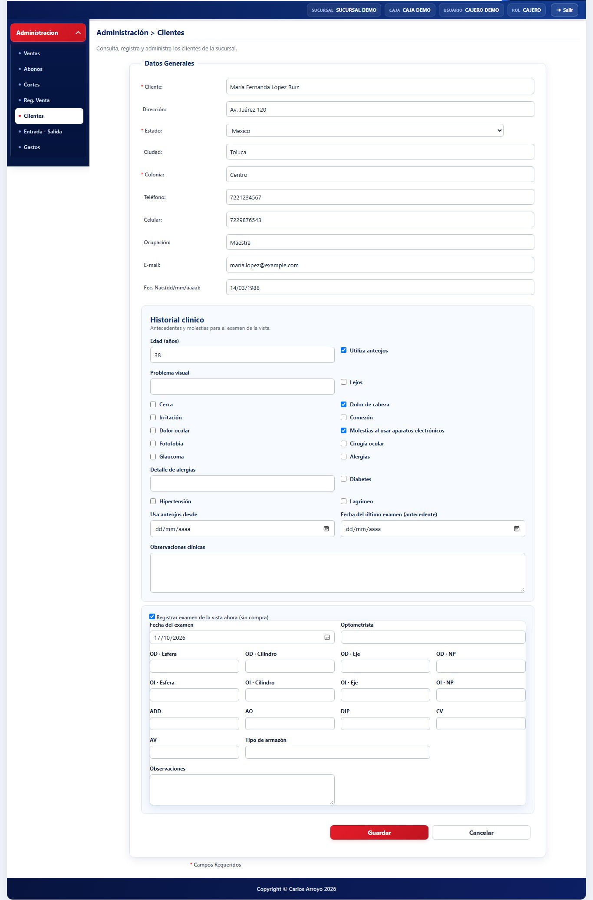
Pulsa Guardar. El sistema confirma «El cliente se ha agregado correctamente». Si hubo examen, queda en el historial del cliente.
8.3Ver y editar un cliente
Pulsa 🔍 en la fila del cliente. Se muestran sus datos generales, el historial clínico, los exámenes de la vista / RX y el historial de ventas (folio, fecha, importe, saldo y acceso a su orden de laboratorio).
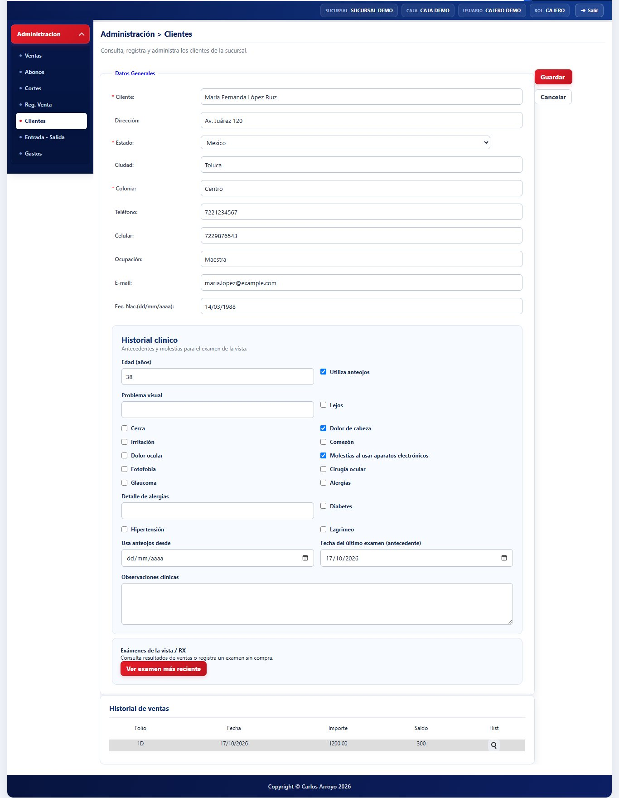
Modifica lo necesario y pulsa Guardar (o Cancelar para salir sin cambios).
8.4Exámenes de la vista y RX
El botón Ver examen más reciente abre la ventana de exámenes. Muestra el examen más reciente (ya sea uno registrado sin compra o la graduación de una venta) con todos sus valores.
Desde esta ventana puedes:
| Botón | Función |
|---|---|
| Editar examen | Habilita los campos para corregir el examen y guardarlo. |
| Agregar examen | Registra un examen nuevo (queda como el más reciente según su fecha). |
| Ver historial | Lista todos los exámenes del cliente para consultarlos. |
8.5Reporte del examen para el paciente
En la misma ventana, el recuadro Reporte para el paciente permite entregar un resultado formal:
- Escribe la Interpretación del optometrista (obligatoria).
- Verifica el Correo del paciente.
- Pulsa Imprimir PDF para abrir el reporte, o Enviar por correo para mandárselo.
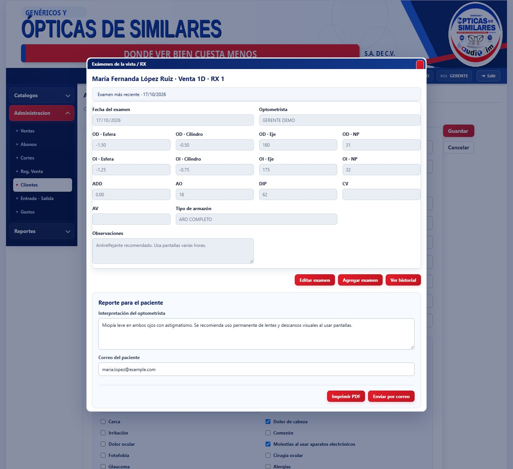
El reporte lleva el logotipo, los datos del paciente, la tabla del examen (OD/OI), la interpretación y la firma de quien realizó el examen.
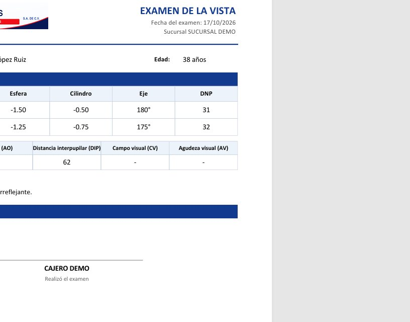
9Gastos
Menú: Caja → Gastos · Perfiles: Cajero y Gerente
Sirve para registrar los egresos de la sucursal (papelería, mensajería, limpieza, transporte, etc.).
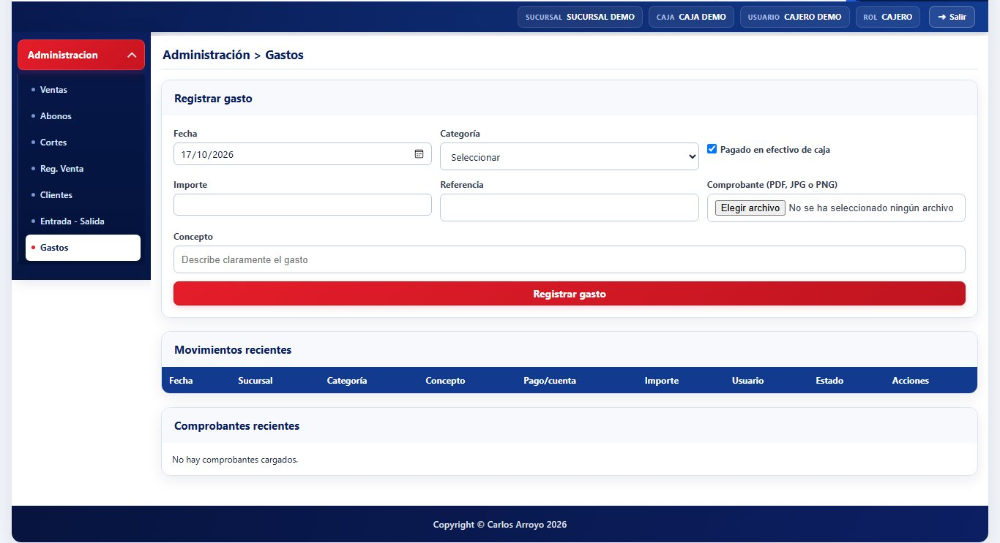
9.1Registrar un gasto
| Campo | Qué capturar |
|---|---|
| Fecha | Fecha del gasto (por omisión, hoy). |
| Categoría | Tipo de gasto (Energía eléctrica, Impuestos y derechos, Limpieza e insumos, Mantenimiento, Mensajería y paquetería, Otros gastos, Papelería, Renta, Salarios y nómina, Teléfono e internet, Transporte y taxi…). |
| Pagado en efectivo de caja | Casilla activa por omisión: el gasto sale del efectivo del corte. Si la desmarcas aparecen Método de pago y Cuenta de origen para gastos pagados de otra forma. |
| Importe | Monto mayor a cero. |
| Referencia | Folio de nota, factura o referencia (opcional). |
| Comprobante | Archivo PDF, JPG o PNG (opcional). |
| Concepto | Descripción clara del gasto (obligatorio). |
Pulsa Registrar gasto. El sistema confirma con «Gasto #N registrado».
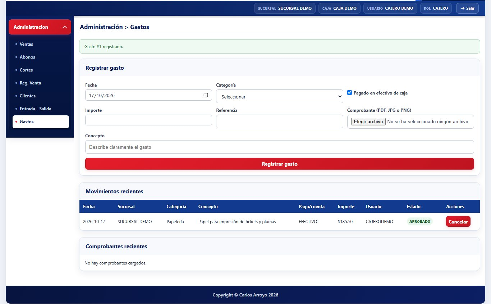
9.2Aprobación y estados
- Un gasto queda APROBADO de inmediato, salvo que su categoría exija aprobación: en ese caso queda PENDIENTE hasta que el administrador lo autorice. El gerente puede registrar gastos que no exijan aprobación como aprobados directamente.
- Los gastos aprobados en efectivo se descuentan del efectivo esperado del corte.
9.3Movimientos recientes y cancelación
Debajo del formulario se listan los movimientos recientes (fecha, sucursal, categoría, concepto, pago/cuenta, importe, usuario y estado) y los comprobantes recientes.
- El botón Cancelar anula un gasto conservando el historial. Solo puedes cancelar los gastos que tu perfil tiene permitido.
- Alcance: el Cajero ve únicamente sus gastos; el Gerente ve los de toda su sucursal.
Rentabilidad (Administrador y Programador)
Es la portada al entrar (y también está en Reportes → Rentabilidad). Muestra por sucursal y de toda la cadena: ventas netas, tickets, ticket promedio, costo de lo vendido, utilidad bruta, gastos operativos, utilidad operativa y sus márgenes. Filtros: fechas, una o varias sucursales y línea. Se puede exportar a Excel con los mismos filtros.
Criterios contables. Las ventas cuentan en su fecha de venta (no por cobro ni entrega) y las canceladas no cuentan. Se muestran sin IVA (los precios incluyen IVA; la tasa se ajusta en «Criterios de cálculo»). Los abonos no crean ventas ni tickets. Ventas netas = ventas − descuentos − devoluciones. El costo de cada partida se congela al venderla (nunca se usa el costo actual del catálogo); también en las micas sale del costo del catálogo (inventario cargado), no de lo que capture el comprador. Lo que no tiene costo no se toma como cero: el tablero lo avisa y marca como provisionales la utilidad y los márgenes. Los gastos operativos son los gastos aprobados más las comisiones;
Gastos centrales. En Gastos, el administrador puede marcar «Gasto central» (por ejemplo, los viáticos del director al visitar sucursales). No pertenece a una sucursal: se muestra aparte, se cuenta una sola vez en el total de la cadena y se reparte entre las sucursales según la política elegida (proporcional a las ventas netas, en partes iguales o sin repartir).
Devoluciones a clientes. Se registran como gasto en la categoría «Devoluciones a clientes»: en Rentabilidad restan de las ventas, no se cuentan como gasto. El sistema no revierte el costo de lo devuelto.
10Inventario (Gerente)
Menú: Inventario → Inventario general · Perfil: Gerente (entradas) y Administrador (todo)
Una sola pantalla para las existencias, los movimientos y el registro de entradas, salidas, traspasos, conteos físicos y bajas de artículos, del almacén y de las sucursales. Todo se puede hacer uno por uno (botones «Entrada», «Salida», «Traspaso», «Conteo físico») o en masa con un CSV («Subir CSV»): el archivo se revisa primero, no se guarda nada hasta confirmar y, si hay un solo error, no se sube nada. «Descargar CSV» baja las existencias, el formato de conteo y los movimientos, y «Plantillas» trae un ejemplo por tipo.
| Acción | Quién |
|---|---|
| Ver existencias y movimientos, registrar entradas (también en CSV) | Gerente (solo sus sucursales) y administrador |
| Salidas (con motivo), traspasos, conteo físico, bajas de artículos y motivos de salida | Solo administrador |
Las ventanas no pierden lo que capturas. Si ya escribiste algo en una ventana (entrada, salida, traspaso, conteo, baja, producto nuevo, CSV), un clic en el fondo, la tecla Esc o el botón Cerrar te preguntan antes de cerrarla, y al salir de la página el navegador avisa. Si el sistema marca un error, aparece dentro de la misma ventana y se conserva todo lo capturado para corregir y volver a enviar. Si no hubo conexión y no se pudo confirmar el guardado, revisa Movimientos antes de reintentar para no duplicar.
Todo vive en esta pantalla: la pestaña Artículos (alta, edición y baja de artículos, para el administrador), Reposición (sugerencias para surtir sucursales desde el almacén), Importar y exportar (CSV maestro, tarifario de micas y exportación por sucursal) y los botones PDF de cada movimiento y de las existencias. El almacén se crea y se edita en Sucursales con el botón «Crear almacén».
Lo que sigue es la consulta con PDF:
10.1Movimientos
Elige la Sucursal. Se listan los movimientos de almacén (entradas, salidas, inventario físico, traspasos) con su número, tipo, fecha y hora. La lupa abre el detalle del movimiento en PDF.
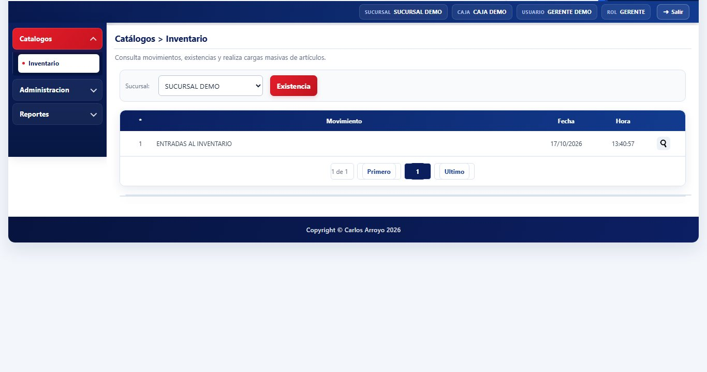
10.2Existencias
Pulsa Existencia para ver el inventario por artículo:
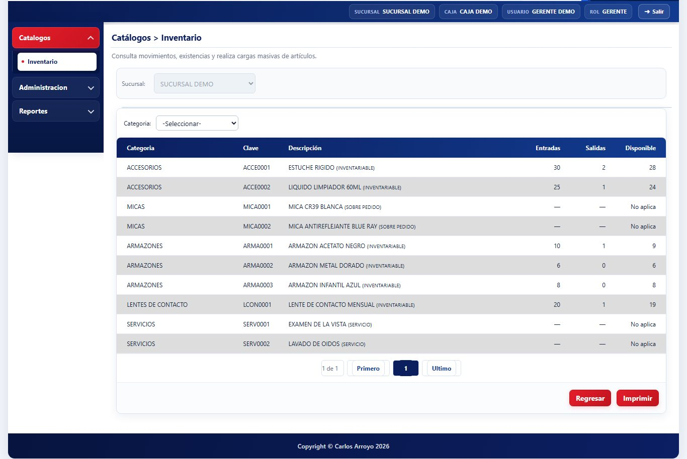
| Columna | Significado |
|---|---|
| Categoría / Clave / Descripción | Datos del artículo y su tipo de control entre paréntesis. |
| Entradas | Piezas que han entrado a la sucursal. |
| Salidas | Piezas vendidas o dadas de salida. |
| Disponible | Entradas − salidas. Los artículos sobre pedido y servicios muestran «No aplica». |
Usa el filtro Categoría para acotar. Con Imprimir obtienes el Reporte de inventario en PDF; Regresar vuelve a los movimientos.
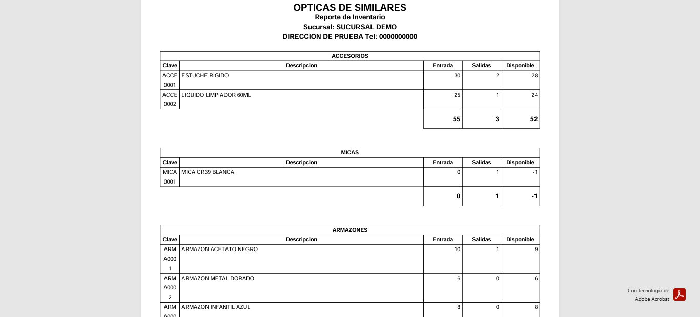
11Reportes (Gerente)
Menú: Reportes · Perfil: Gerente
Todos los reportes respetan las sucursales a las que tienes acceso.
11.1Ingresos — Ingresos por sucursal
Muestra el dinero cobrado por sucursal, fecha y corte.

- Elige Fecha inicial, Fecha final y Sucursal (o Todas las disponibles).
- Pulsa Consultar (o Exportar Excel).
Las tarjetas resumen Efectivo, Tarjeta, Otros ingresos y Total cobrado. En la tabla cada renglón es un día de un corte (con su caja y estado Abierto/Cerrado). Los cobros de las nuevas cancelaciones se conservan como dinero recibido; las devoluciones se registran una sola vez como gastos. Las cancelaciones históricas anteriores a esta regla conservan sus cifras. La lupa Ver abre el corte completo.
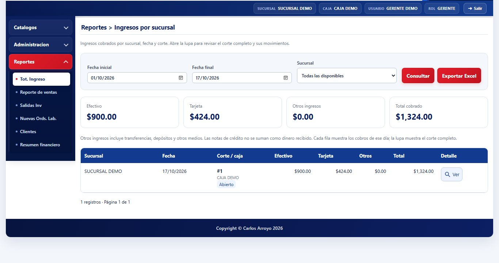
11.2Reporte de ventas
Una sola pantalla para consultar ventas, pagos, saldos y vencimientos.
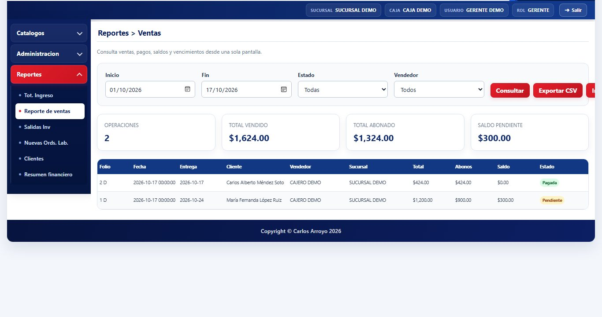
| Filtro | Opciones |
|---|---|
| Inicio / Fin | Rango de fechas. |
| Estado | Todas, Activas, Pendientes, Vencidas, Pagadas, Canceladas. |
| Vendedor | Todos o un empleado. |
Resumen: Operaciones, Total vendido, Total abonado y Saldo pendiente. La tabla muestra folio, fecha, entrega, cliente, vendedor, sucursal, total, abonos, saldo y un estado con color (Pagada, *Pendiente*…). Con Exportar CSV descargas los datos y con Imprimir obtienes la versión de impresión.
11.3Salidas de inventario
Reporte en PDF de las piezas vendidas (salidas) agrupadas por categoría.
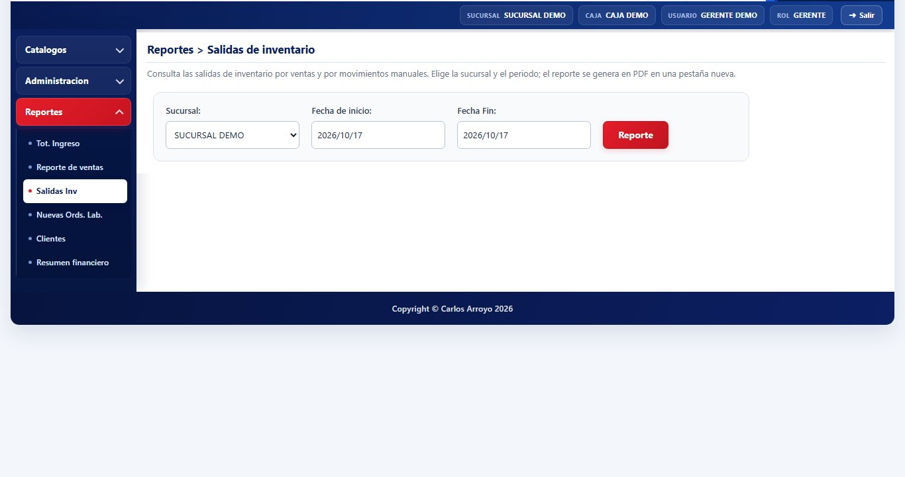
Elige la Sucursal y el rango (dInicio / dFin) y pulsa Reporte. Se abre el PDF con las salidas por artículo, subtotales por categoría y el total.
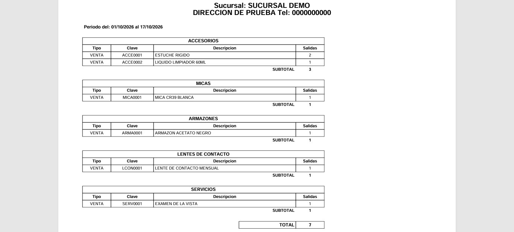
11.4Órdenes de laboratorio
Lista las ventas con graduación (lentes que se mandan a hacer) y permite avisar cuando llega el pedido.

Columnas: Sucursal / nota, Fecha, Cliente, Registró / solicitó, Pedido, Importe nota, Entrega, Llegada y Detalle. Con Consultar filtras por fechas y sucursal; Exportar Excel descarga la lista.
La lupa Ver muestra la nota, el cliente y el RX completos:
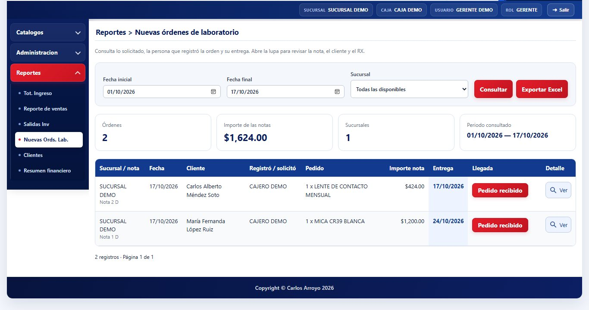
Avisar que llegó el pedido
Cuando el pedido llega del laboratorio:
- En la columna Llegada pulsa Pedido recibido y confirma.
- El sistema registra la fecha de llegada y envía un correo a los destinatarios de avisos de pedidos (con nota, cliente, teléfono, sucursal y fecha de entrega prometida).
- En el renglón aparece Recibido {fecha}, el botón verde WhatsApp al cliente y el estado del correo.
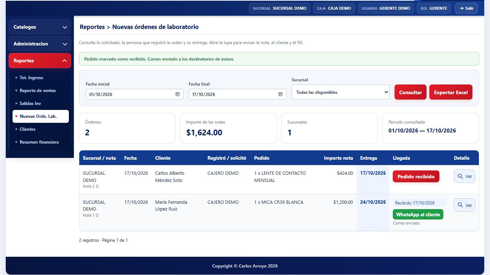
- WhatsApp al cliente abre WhatsApp con un mensaje listo para el cliente: «Hola {cliente}, tu pedido de lentes (folio 000001‑D) ya llegó a {sucursal}. Te esperamos.» firmado como Genéricos y Ópticas de Similares. Solo debes pulsar Enviar. Sale desde el WhatsApp que esté abierto en esa computadora (usa el de la empresa).
- Si el cliente no tiene un teléfono válido (celular o teléfono de 10 dígitos) se indica «Sin teléfono válido para WhatsApp» y no se genera el enlace.
- Si el correo falla, aparece Reenviar correo. Un pedido solo se puede marcar una vez.
11.5Clientes — Reporte de clientes
Lista de clientes por sucursal.
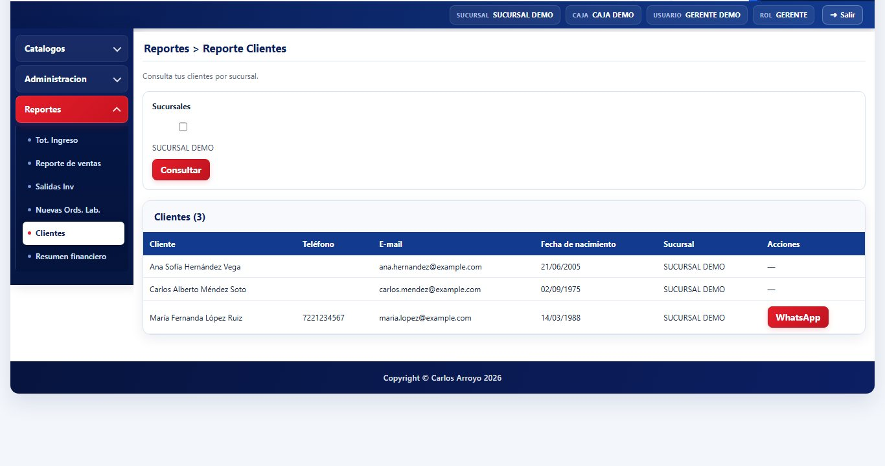
Marca la(s) Sucursal(es) y pulsa Consultar. Muestra Cliente, Teléfono, E‑mail, Fecha de nacimiento, Sucursal y, si el cliente tiene un número válido, el botón WhatsApp para contactarlo. La columna Teléfono muestra el celular del cliente y, si no tiene, su teléfono fijo.
11.6Resumen financiero
Visión rápida de cómo va el negocio en un periodo.
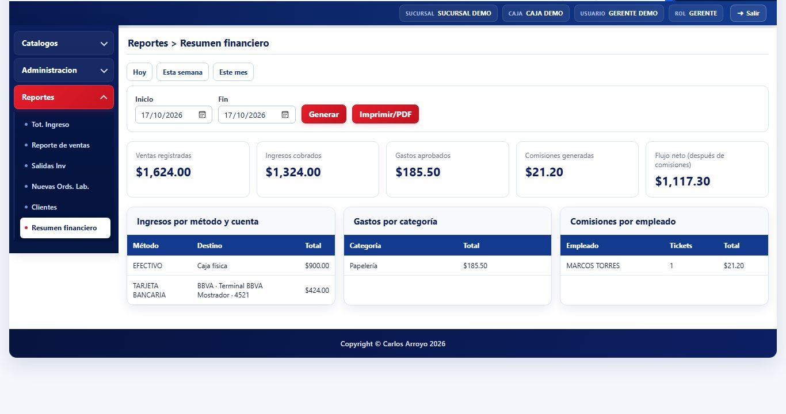
Elige Hoy, Esta semana, Este mes o un rango de Inicio / Fin y pulsa Generar (o Imprimir/PDF). Muestra:
| Indicador | Significado |
|---|---|
| Ventas registradas | Total vendido. |
| Ingresos cobrados | Dinero efectivamente cobrado. |
| Gastos aprobados | Egresos del periodo. |
| Comisiones generadas | Comisiones de ventas liquidadas. |
| Flujo neto (después de comisiones) | Ingresos − gastos − comisiones. |
Y tres tablas: Ingresos por método y cuenta, Gastos por categoría y Comisiones por empleado.
12Documentos que genera el sistema
12.1Ticket (nota de venta)
Se abre con el botón Ticket (en Ventas, Abonos o Registro de venta). Es un PDF para impresora de ticket con: sucursal, folio, estado (PENDIENTE DE LIQUIDAR o liquidada), fecha y entrega, cliente y teléfono, quién lo atendió, el detalle de la venta, total, abonos y saldo pendiente, el importe con letra, la forma de pago y las leyendas de garantía.
12.2Orden de laboratorio
Se abre con Ord. Lab. Lleva todo lo que necesita el laboratorio: paciente, graduación (OD/OI), ADD y DIP, datos del lente (tipo, progresivo, material, color), del armazón, servicios, medidas de montaje, observaciones, optometrista y quién capturó.
12.3Solicitud de factura
Se abre con Factura (en Ventas) o Solicitar factura (en Registro de venta). Sirve para pedir al contador que timbre la factura (CFDI 4.0).
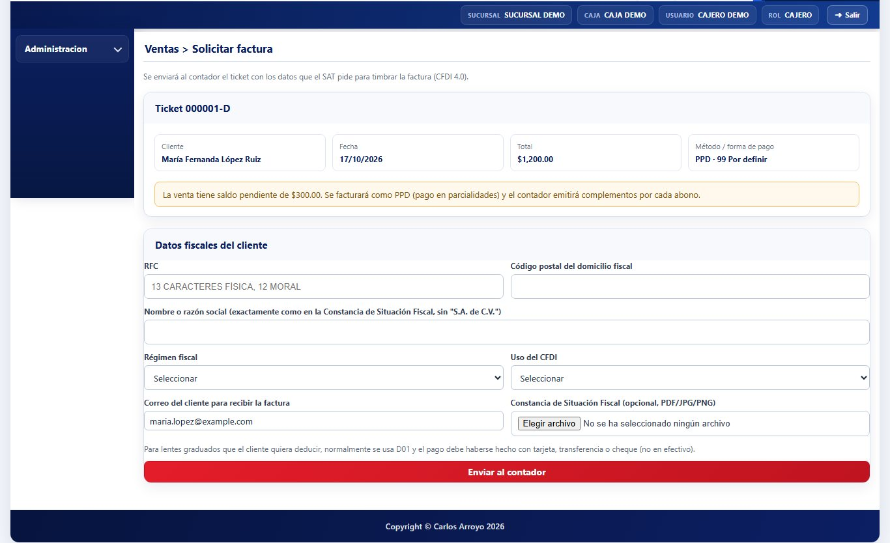
| Campo | Notas |
|---|---|
| RFC | 13 caracteres persona física, 12 moral. |
| Código postal del domicilio fiscal | Del cliente. |
| Nombre o razón social | Exactamente como en la Constancia de Situación Fiscal, sin S.A. de C.V. |
| Régimen fiscal y Uso del CFDI | Se eligen de una lista. Para lentes graduados deducibles normalmente se usa D01, y el pago debe ser con tarjeta, transferencia o cheque (no en efectivo). |
| Correo del cliente | Para recibir la factura. |
| Constancia de Situación Fiscal | Archivo opcional (PDF/JPG/PNG). |
Quién captura y quién envía. El vendedor (cajero o gerente) captura los datos fiscales del cliente y pulsa Guardar datos para factura; no vuelve a verlos. Los datos quedan en Facturación > Facturas pendientes, donde el administrador (o el programador) abre cada ticket, corrige si hay errores y pulsa Solicitar factura para enviarlos al contador. Solo ellos pueden enviar la solicitud.
Pulsa Solicitar factura. Si la venta tiene saldo pendiente se factura como PPD (pago en parcialidades) y el contador emitirá complementos por cada abono; si está liquidada, como PUE.
12.4Reporte del examen y ticket del corte
Se describen en las secciones 8.5 y 4.5.
13Avisos automáticos
El sistema envía correos de forma automática en estos casos (los destinatarios los define el administrador):
| Evento | Qué se envía | A quién |
|---|---|---|
| Pedido recibido (botón en Reportes → Órdenes de laboratorio) | Correo con nota, cliente, teléfono, sucursal y entrega prometida. | Destinatarios de avisos de pedidos. |
| Stock mínimo (proceso diario) | Alerta cuando la existencia de un artículo baja de su mínimo. | Correo de alertas de la sucursal. |
| Horas extra por aprobar (cada captura de un empleado) | Aviso con el empleado, la sucursal, la fecha, las horas y la nota. En Telegram trae los botones Aprobar y Rechazar (al rechazar, el bot pide el motivo: responde al mensaje). Sin Telegram se envía por correo. | Destino de Telegram o correos con el aviso de horas extra. |
Todos los correos terminan con la firma Genéricos y Ópticas de Similares.
Reportes → Horas extra (administrador)
Muestra las horas extra de todos los empleados en un periodo, con filtros por fechas, sucursal, empleado y estado, y el resumen de horas por empleado. Cada captura pendiente se aprueba, se modifica (se aprueban menos horas de las capturadas) o se rechaza con un motivo obligatorio. Un administrador no decide sus propias horas: lo hace otro administrador. Los botones Excel: detalle y Excel: resumen por empleado descargan el periodo para la nómina.
14Qué puede hacer cada perfil
| Función | Cajero | Gerente |
|---|---|---|
| Abrir y cerrar cortes | ✔ | ✔ |
| Registrar depósitos de efectivo (corte abierto) | ✔ | ✔ |
| Registrar / cancelar depósitos en corte cerrado | ✖ | ✔ |
| Reabrir o editar un corte | ✖ | ✖ (solo Administrador) |
| Vender (notas, graduación, pagos) | ✔ | ✔ |
| Registrar clientes y exámenes | ✔ | ✔ |
| Cobrar abonos | ✔ (solo sus ventas) | ✔ (toda la sucursal) |
| Ver el registro de ventas | ✔ (solo sus ventas) | ✔ (toda la sucursal) |
| Cancelar ventas | ✖ | ✔ |
| Solicitar factura, imprimir ticket y orden de laboratorio | ✔ | ✔ |
| Checar entrada / salida | ✔ | ✔ |
| Registrar gastos | ✔ (ve los suyos) | ✔ (ve los de la sucursal) |
| Consultar inventario y existencias | ✖ | ✔ |
| Reportes (ingresos, ventas, salidas, órdenes, clientes, financiero) | ✖ | ✔ |
| Marcar Pedido recibido y enviar WhatsApp al cliente | ✖ | ✔ |
15Preguntas frecuentes y solución de problemas
No puedo vender, me manda a Cortes. No tienes un corte abierto. Abre uno con Nuevo capturando el fondo (sección 4.2).
Dice «Stock insuficiente… Disponible: N». Intentas vender más piezas de un artículo inventariable de las que hay en la sucursal. Baja la cantidad o pide al gerente que verifique el inventario.
No me deja agregar el pago con tarjeta / transferencia. Falta elegir la Cuenta / destino. Si la lista está vacía, el administrador debe dar de alta la terminal o cuenta.
No puedo guardar la venta. Verifica que estén capturados cliente, optometrista, vendedor, fecha de entrega y que haya al menos un artículo. Los campos en rojo indican lo que falta. En las micas, la DIP es obligatoria.
Un descuento no se acepta. El descuento por artículo debe estar entre 0 % y 100 %.
No veo una nota en Abonos o en Registro de ventas. Si eres Cajero, solo ves las notas donde tú eres el vendedor. El gerente puede consultarlas todas.
No aparece el botón «Cancelar Venta». Solo gerentes y administradores pueden cancelar ventas. Pídelo a un gerente.
Cerré el corte y me equivoqué en lo contado. Un corte cerrado no se edita con tu perfil. Avisa al administrador para que lo corrija.
Al abonar dice «Debes tener un corte abierto». Los abonos se registran dentro de un corte. Abre el corte de tu caja.
No se envía el correo del pedido recibido. El pedido queda registrado igualmente. En el renglón pulsa Reenviar correo. Si sigue fallando, avisa al administrador (puede faltar configurar el correo de avisos o el servidor de correo).
En «Pedido recibido» dice «Sin teléfono válido para WhatsApp». El cliente no tiene celular/teléfono de 10 dígitos. Captura su celular en la ficha (sección 8.3) y vuelve a consultar.
Se cerró mi sesión / el sistema pide iniciar sesión de nuevo. La sesión caduca por seguridad. Vuelve a entrar; los datos ya guardados no se pierden. Si estabas capturando algo, revísalo antes de guardar de nuevo.
16Glosario
| Término | Significado |
|---|---|
| Corte | Periodo de trabajo de una caja: va del fondo inicial al conteo del efectivo. |
| Fondo | Efectivo con que se abre la caja. |
| Nota (remisión) | Documento de venta del mostrador. |
| Anticipo / Abono | Pago parcial de una nota. |
| Saldo | Lo que falta por cobrar de una nota. |
| Liquidada | Nota con saldo cero. |
| RX | Receta o graduación del cliente. |
| OD / OI | Ojo derecho / ojo izquierdo. |
| Esf. / Cil. / Eje | Esfera, cilindro y eje de la graduación. |
| ADD | Adición (para lentes progresivos o bifocales). |
| AO | Altura óptica. |
| DIP / NPD / DNP | Distancia interpupilar / distancia naso‑pupilar. |
| CV / AV | Campo visual / agudeza visual. |
| Inventariable | Artículo cuyo stock se controla. |
| Sobre pedido | Artículo que se pide al laboratorio; no maneja existencia. |
| CFDI | Factura electrónica (Comprobante Fiscal Digital por Internet). |
| PUE / PPD | Pago en una sola exhibición / pago en parcialidades o diferido. |
| Comisión | Porcentaje que se paga al vendedor por cada nota liquidada. |